Abstract#
Skin picking, or dermatillomania, is a compulsive behaviour that affects millions of individuals, often leading to physical damage, emotional distress, and a cycle of self-perpetuating harm. This document presents self-reflecting, analytical exploration of skin picking, offering insights into my subconscious triggers, psychological underpinnings, and the challenges of overcoming it.
With personal experience, I will take you, the reader, through my acknowledgement to the severity of the condition, transitioning from dismissing it as a mere "bad habit" to understanding it as a complex behavioural disorder. The document examines both internal and external factors contributing to skin picking, including neurological impulses, emotional triggers, and environmental stressors. This trial occurred over the course of 2025-2026 (2 years).
A variety of management strategies have been identified, including behavioural interventions, cognitive techniques, and physical barriers. This document focuses on physical barrier strategies. The document also highlights the importance of proper skin care in breaking the cycle of damage and recovery. Additionally, the limitations of common coping mechanisms, such as fidget toys, pressure rings and transient distractions, are analysed in favour of more sustainable, long-term solutions.
Ultimately, this work serves as both a personal testimony and a guide for individuals struggling with skin picking, advocating for a multifaceted approach that combines self-awareness, behavioural training, and practical solutions. The goal is to manage the behaviour, get some control over it, and work towards long-term healing.
Personal Experience and Acknowledgment#
I have a chronic issue with skin picking. Main area of damage is around the nails/ proximal nail fold/ cuticles on every finger of both hands.
Only in the last few years have I begun to acknowledge the severity of this condition. Up until then, skin picking had been considered a 'bad habit'. Something that I should stop doing if I just tried, but could never stop realistically – I pick even when I’m not paying attention, how can you stop that? I did try to wear gloves a few years ago but stopped after a few minutes as it was inconvenient when I tried to do anything with my phone, and I wouldn’t be seen dead going out in public wearing gloves (I’m no Jared Leto).
I guess I didn’t really think too much about it, as it was always something that I had just done, and for the most part, I was relatively successful at keeping it hidden (or in general, avoided people passing comment on my habits).
A wakeup call was brought to light when I almost lost control of my car while driving due to inattention caused by picking at a finger.
And so, I began to take my 'bad habit' seriously, call it what it was, a compulsion, and start down a path to create a better future for myself in which I gain back control of my body and mind.
Here comes the personal attack:
I can’t take skin picking seriously, it’s not a big deal, it’s not going to kill me, I have eczema and that’s challenging but I put up with that too, and don’t other people have it worse, I’m not sick, it’s just a bad habit. I can stop, the skin just keeps getting damaged with day-to-day life and I can’t help with pulling dead skin off and finger skin tags and my skin has always been bad it’s just the way it is. Stop complaining and stop picking it’s disgusting and a bad habit. Other people have psoriasis and cancer and mental health issues, so what have you got to complain about.
Unsurprisingly, that pep talk didn’t work - what’s next?
Understanding Skin Picking as a Disorder#
At the end of the day this is a disorder, something that is always on, conscious and subconscious.
Some people have OCD.
Some people have Autism.
Some people have trauma and use self-destructive tendencies as a coping/ soothing mechanism.
I’m not a doctor. All I know is that everybody’s got their own stuff going on. The human body is just way too complicated. There are millions of neurons firing off in our heads per second. There’s no way everyone’s going to be wired the same way.
Critical Insights#
Skin picking is often a subconscious response to a need for stimulation. My hands naturally seek sensory input, whether actively or passively. I often find small objects in my hand that I am actively fidgeting with, but don’t remember picking them up.
I’ve noticed that when my mind is fully engaged—whether through work, a hobby or home project, or a demanding task—my tendency to pick decreases. During particularly busy periods, my fingers begin to heal, and I become aware of how much better they look.
Conversely, when I am less occupied, when my hands are idle, or when I experience discomfort and stress, the urge to pick intensifies. Without external focus, my hands instinctively seek stimulation, reinforcing the destructive cycle.
Triggers and Psychological Mechanisms#
Skin picking is a form of stimulation that evolves into a self-perpetuating, destructive cycle. The act itself provides sensory input, but the resulting damage - whether from open wounds, scabbing, or tight, healing skin - introduces discomfort (stimulation) that reinforces the behaviour. These sensations act as subconscious triggers, drawing attention to the affected areas and prompting further engagement, either deliberately or reflexively.
The Root of the Habit#
While skin picking is the visible outcome, its underlying triggers vary widely. One significant factor is habitual stimulation - seeking behaviour.
From an early age, I was drawn to small objects (pen lids, pencil sharpeners, bottle caps) collected in my pockets, scattered around the house, or in a small pile on my desk. These objects served as tools for fidgeting, providing a tactile form of engagement. When I was around 8 years old, I remember having a random pile of things in my pencil case and either my teacher or a parent scolded me about having those distractions and to throw them out. I remember thinking it was weird that other kids didn’t have their own small piles of things to fidget with.
Little did we know.
What none of us realised was that these objects weren’t just idle distractions; they were fulfilling a sensory need. I wasn’t just keeping my hands occupied, I was actively (subconsciously) seeking stimulation. In my adult life it is no different and I have a collection of miscellaneous things on my desk in work and at home that I pick up and fidget with every day. You would swear a magpie follows me around giving me gifts.
Subconscious Coping Mechanisms#
Over time, I developed subconscious strategies to manage this need for stimulation, particularly in moments of stillness/ idleness. I can identify what they are in retrospect, but I had no idea at the time:
At bedtime – I find it difficult to fall asleep unless my hands are pinned under my body, whether beneath my chest, back, or legs (I always thought the depiction in media of people sleeping with their arms outside the blankets was crazy – I could never sleep like that).
While reading – If I’m holding a book with one hand, the other is wrapped around my neck with the chin applying pressure, pinning it down. Or tucked under my leg, or placed inside the waistband of my pants on my hip - I’m a little teapot style.
Using my laptop – One hand is using the trackpad, the other hand is idle, so I place it inside the waistband on my hip or sit on the hand.
In isolation, these are just quirky habits. In combination, we can begin to see a pattern. Any limb that is idle is trying to find sensation in the form of fixation/ being contained.
When Coping Mechanisms Fail#
Issues arise when I’m in situations where these coping strategies are impractical or socially unacceptable—such as driving, working, or in public. In these scenarios, my hands are technically idle (or at least idle often enough to allow for skin picking), and that’s when the worst damage occurs.
Driving is the most challenging environment where my hands are unoccupied but still engaged. My hands can end up a bloody mess after some stressful driving. This cycle, where my hands seek stimulation, but my environment limits my ability to redirect that need, creates the perfect conditions for skin picking to thrive. Recognising these triggers and behavioural patterns was the first step on the path towards understanding and potentially managing this compulsion.
Strategies for Management and Recovery#
If there was a solution that worked, the internet would be shouting about it (besides drugs), and some company would be trying to make money out of it. I am very cynical. From what I have read online about people’s personal accounts and struggles, my conclusion is that there is no ‘cure’ for skin picking, and there never will be. Management of the issue is the path forward on how we tackle this issue.
Mental:
Cognitive Behavioural Therapy
Habit Reversal Training and “Urge Surfing”
Habit Forming/ Routine.
Education
Physical:
Recovery/ healing of damaged tissue & techniques
Managing/ preventing picking
Maintenance of the tissue
There are several mental and physical techniques that could be used in combination to manage the issue.
Scope#
The scope of this effort focuses on physical strategies. CBT & medication are out of scope for me. I believe CBT could work, so I do not want to rule that out as it could be used later. The severity of my skin picking would not justify medication in my geography.
For now, my efforts will instead focus on understanding the physical aspects of the problem and solutions. These elements are tangible to me.
Mental – Routine, Education
Physical – Recovery, Management, Maintenance.
Education is a key consideration. You cannot solve for a problem you do not understand. I have no knowledge on the structure of the skin around nails. I have no information about skin care routines and how to correctly perform them on my fingers. I do not know why the skin keeps getting damaged (the skin gets damaged over time even when I go through spells of not picking).
Terminology: I refer to the skin around the fingernails as the cuticle, but the skin around the nails is predominantly the proximal nail fold. For simplicity’s sake, I just roll both up into the terminology ‘cuticle’.
I also know nothing about psychology around the urge to ‘pick’.
I am aware that physical solutions are only partial solutions. The obvious pitfall with them is that a person may not always have them to hand (which is why fidgets have not solved the problem).
Physical: Trials and Insights#
It's safe to say I had no idea what I was doing at the start of this endeavour. I had vague criteria/ requirements for what I was trying to achieve other than wanting to stop myself from picking at the skin of my cuticles - I didn't know what I didn't know. By the end of my first trial/thought exercise I had a list of criteria I could start comparing solutions against.
My first steps were tentative. In the comfort of my own home, behind closed doors, I experimented and researched. I briefly wore different types of gloves, drew from previous experiences, and looked into solutions online and on various subreddits.
I went through a gloves phase — leather gloves, driving gloves, cotton gloves, golf gloves — and read up on other people's physical solutions. The ones that came up most often were fidget spinners and "picking stones." I also read a lot about acrylic nails making picking more difficult.
The gloves I actually trialled at home. The fidget spinners, picking stones, and acrylic nails I only speculated on, drawing conclusions from other people's comments.
Pseudo-Trial 1#
Gloves: Gloves were an obvious starting point to serve as an effective barrier against blocking me from skin picking. At work I would wear medical-grade gloves regularly. While gloves successfully prevent skin picking, they come with significant drawbacks: sweaty hands, impaired grip, and the inability to use a phone without taking them off. One fairly obvious issue was that I couldn't leave the house wearing gloves — it would look strange, and I don't want to draw attention to myself. So, they weren't a viable long-term solution.
That said, an interesting realisation emerged from wearing them: my hands and fingers no longer actively sought out stimulation in the form of picking – which was different to what I expected – the gloves acting like a physical barrier to prevent picking. The need for tactile stimulation was, in a sense, already being met with the presence of the gloves pressing on my hands. This led me to think about the role of a feedback loop — the gentle, consistent pressure from the gloves acting as a soothing signal to my brain, similar to sitting on my hands or tucking them into my waistband. It reminded me of Temple Grandin's squeeze machine, designed to provide deep-pressure stimulation and a self-soothing effect for people with severe Autism.
Despite this insight, the gloves I tried remained impractical as a long-term solution. The ideal solution needs to integrate seamlessly into daily life without becoming a burden — simplicity and ease of implementation are key.
Fidgets: In exploring alternative physical solutions, I came across discussions on Reddit about fidget spinners, "picking stones," pressure rings, and other tactile tools. These work by keeping hands occupied, either passively (fidget toys) or actively (picking stones, which engage the user and trigger endorphin release). The fundamental flaw with fidgets, though, is that they are temporary — they can be put down, and the moment they're not in use, the cycle of skin picking can and will resume.
Fidget Rings: A ring worn on the finger with a spinning element. I did not try these, and I’m also a sceptic. If they worked well, people would be shouting about them, and I could see a couple of issues with them. The rings appear noticeably bulky on the finger, which could catch when reaching into a pocket. Hygiene may also be a concern, given the construction — if dirt gets into the bearing surface, does that stop the fidget from working? Too many unknowns.
Pressure Rings: In theory these should work well, and do not have the same drawbacks as a Fidget Rings. Where I see these items falling down is practicality of long-term wear – might not be able to go out in public wearing them, and they are bulky on the fingers, so would impede dexterity, and impair grip.
Gloves (on the other hand), succeed where fidgets fail because they stay on the body. Their limitations point to the need for something better — a solution combining the constant presence of gloves with the usability and convenience of fidget tools. That realisation pointed me toward a middle-ground physical solution, yet to be fully defined.
Acrylic Nails Analogy: Did I mention I don’t know what I’m doing. Acrylic nails were off the table for me (gender and job requirements). I do have access to medical grade UV glue… so I experimented with glue on the cuticle area as a "skin-picking alternative" — a fairly wild idea, and not one I'd recommend. I've gotten superglue on the skin of my fingers plenty of times and can never resist picking it off, regardless of how destructive the outcome is; the sensation of glue on skin is very similar to picking at a scab during the healing process. I'd read on Reddit forums about fake nails and UV lacquers could be applied to make nails blunt and that picking becomes nearly impossible. I laid down a raised bead of UV glue along my cuticle line and cured it (both index fingers and thumbs). In a different attempt on another day, I cured a bead of UV glue around the leading edges of the nails.
The results were… interesting. It worked in the sense that a physical barrier prevented me from picking at the skin of my cuticles directly. That was about the only thing that worked. My fingers had a field day rubbing and picking at the glue itself. For the most part it held, but the cuticle underneath became moist from sweat and hand-washing, and the glue eventually lifted after a few hours — at which point I picked at it and tore the cuticle off along with it. The glue on the nail bed itself didn't cause damage, since it wasn't exposed to the same moisture. My fingers actually got tired from all the picking I did at the glue on my nail beds — it was intense, and I found it hard to concentrate on work. The brief experiment was a rollercoaster, and not one I'm eager to repeat.
Take Aways#
Gloves have been mostly ruled out. Fidgets and Picking Stones don’t solve for my needs longer term. Fidget/ pressure rings are an interesting concept that solves for some things and fails in other ways. We have identified a list of Criteria (listed below) to take forward to a more refined test environment.
One last ‘criteria’ that did not make it into the list but was implemented as part of the procurement process was the need for any solution identified/ acquired had to be affordable and readily available over the counter. This was partially due to me not knowing if this trial would have a successful outcome, and not wanting to waste money needlessly. If the trials were successful, then I wanted to be in a position where the solution was low cost to implement and could buy online or even in shops.
List of Criteria#
Must prevent skin picking – provides an effective physical barrier or removes the opportunity to pick.
Must have constant/continuous presence – can't be something that can be “put down".
Must be comfortable for extended wear – no tightness, chafing, or physical discomfort over time. Must allow skin to breathe or avoid causing skin to become damp.
Must provide a feedback/soothing mechanism – ideally offers a tactile or pressure stimulation.
Must not impair daily function – doesn't compromise grip, dexterity, or the ability to use a phone or do normal tasks.
Must not be physically obtrusive – nothing bulky or with edges/parts that could snag or drag.
Must be discreet / socially acceptable – can be worn out in public without drawing attention.
Must be simple and easy to implement – low-effort to use and maintain, integrates seamlessly into daily life without being a burden.
Must be hygienic – shouldn't trap dirt or get wet/ hold moisture.
Must be durable / non-degrading with normal activity – shouldn't fail from routine exposure to sweat, hands washing etc.
Surprisingly long list. I was a bit overwhelmed by the number of criteria required. I had no idea how involved this was going to be.
I have a full-time job and hobbies. I needed to find a way to test solutions against these criteria passively as I go about my day/ life. Success would look like I had not picked at my skin during these tests – measured subjectively afterwards with observations to any damage sustained to my skin.
Test Methods#
The tests I have devised are as follows, and also listed are the criteria each test solves for:
Test 1: Laptop/ Phone Test
During laptop usage, I need finger dexterity for typing, I need touch sense for the trackpad, and there are times during laptop use when my hands will be idle as I watch media.
1) Must prevent skin picking
2) Must have constant/continuous presence
3) Must be comfortable for extended wear
4) Must provide a feedback/soothing mechanism
5) Must not impair daily function
Test 2: Driving Test:
Dexterity and grip required to interact with the controls of a vehicle, and also long periods of single-handed driving/ idle hands.
1) Must prevent skin picking
2) Must have constant/continuous presence
3) Must be comfortable for extended wear
Test 3: Pocket Test:
Whatever solution I have in place, I need to be able to reach into my pocket with ease as many times as I want, without snagging or additional effort.
6) Must not be physically obtrusive
7) Must be discreet / socially acceptable
8) Must be simple and easy to implement
Assumptions:
Not all criteria could be tested for as part of these 3 tests or needed to be tested over a longer period to get a more accurate result.
9) Must be hygienic
10) Must be durable / non-degrading with normal activity
Trial 2#
Overview#
A number of items were researched and bought to trial on my hands:
Gloves
Silicone finger cots – various sizes (lengths, thickness)
Rubber bands – various sizes (lengths/widths/thicknesses)
Silicone rings*
Hair ties (fabric & polymer)
Medical tape (10mm width, white and black)
Silicone O-rings – various sizes (diameter, thickness)
Note: I was sent the wrong size silicone rings — not possible to compare, so these will be trialled in a follow-on trial.

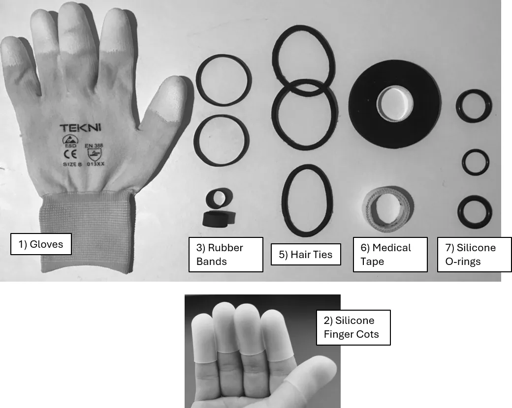
Initially I was researching solutions I could implement on the damaged regions of my fingers (the cuticles), as that was the region of greatest activity/damage — this was the approach I took when applying items to my hands and fingers throughout this trial. Where applicable, the solution was attempted to be applied across multiple digits.
Methods#
This trial lasted several weeks and was conducted selectively between the home and office. *Gloves and silicone finger cots never made it out the front door of the house.
The tests used:
The Laptop/ Phone test
Driving Test
Pocket Test
Criteria for the trial:
This trial was run against the full 10-point criteria list:
Must prevent skin picking
Must have constant/continuous presence
Must be comfortable for extended wear
Must provide a feedback/soothing mechanism
Must not impair daily function
Must not be physically obtrusive
Must be discreet / socially acceptable
Must be simple and easy to implement
Must be hygienic
Must be durable / non-degrading with normal activity
Outcome#
| Criteria | Gloves | Finger Cots | Rubber Bands | Silicone Rings | Hair Ties | Medical Tape | Silicone O-rings |
|---|---|---|---|---|---|---|---|
| 1Prevent | Pass | Pass | Pass | — | Pass | Pass | Fail |
| 2Presence | Fail | Fail | Partial | — | Partial | Partial | Fail |
| 3Comfort | Pass | Fail | Partial | — | Partial | Partial | Fail |
| 4Feedback | Pass | Pass | Pass | — | Pass | Pass | Pass |
| 5Function | Fail | Fail | Partial | — | Partial | Partial | Fail |
| 6Obtrusive | Fail | Fail | Partial | — | Partial | Partial | Partial |
| 7Discreet | Fail | Fail | Partial | — | Partial | Partial | Partial |
| 8Simple | Pass | Fail | Pass | — | Pass | Fail | Pass |
| 9Hygienic | Partial | Pass | Pass | — | Partial | Fail | Pass |
| 10Durable | Pass | Pass | Partial | — | Partial | Pass | Pass |
| Verdict | Out | Out | Proceed | Yet to try | Proceed | Proceed | Out |
Discussion#
1) Gloves — Verdict: Not a solution.
They worked, but were very inconvenient, and I would have a panic attack trying to wear them in public, so they failed on those criteria. Multiple types were trialled (golf, full cotton, leather, cotton with rubber tips, latex). The cotton with rubber tips worked best and were easiest to put on/take off. All gloves had to be removed for laptop/phone use.
2) Silicone finger cots — Verdict: Not a solution.
I bought a few different iterations of these. I found some with a low profile, sold as a sewing aid (helps push a needle through thick fabric), but everything else available online had a thick wall and felt clumsy and heavy when applied across multiple digits. I realised I could achieve a similar effect by cutting the fingers off a latex glove (the non-disposable kind). Technically, the individual latex fingers worked, but they were difficult to put on/take off, and latex doesn't breathe, so the skin got damp underneath. I also had to remove them to use my phone — which led to me cutting the tips off, leaving just a sleeve of latex on the finger, but they remained awkward to put on/take off, and the skin stayed damp underneath.
3) Rubber bands — Verdict: Move forward to next trial.
I found a size range that worked fairly well across different fingers and locations, though wearing them constantly drew some attention (a bit of a fashion statement). The material doesn't breathe, so skin could get damp underneath the wider bands, and finding bands with just enough constriction — without impacting blood supply to the fingertips — was a challenge. Applying them across multiple digits was hard to stay on top of, as the bands moved or fell off during the day. Lower profile and higher friction than the hair ties made them more successful at staying in position on the fingertips over time, and they sat in exactly the right spot for sensory feedback and stimulation — the constriction itself provided a sensory feedback loop. The rubber would relax over time (absorbing oils from the skin), reducing pressure on the fingertips while maintaining a good level of grip. The risk of cutting off blood supply is a concern as it can easily happen on the fingertips.

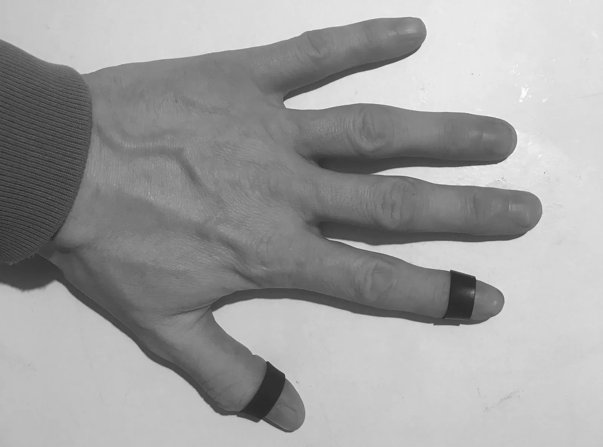
4) Silicone rings (silicone wedding bands) — Verdict: N/A for this trial.
I ordered these online, but none fit on arrival. I later noticed the sizing on the packaging was wrong. I was sent the incorrect size. I've requested the correct size and will give these a proper attempt in the next trial.
5) Hair ties — Verdict: Move forward to next trial.
Moderately successful and easy to use overall, though not on the fingertips specifically — they had to be wrapped three times around the finger to get a decent hold (the thumb only needed two wraps), which left them exposed and prone to slipping or rolling off due to the natural taper of the fingertips and round profile of the hair ties. Putting hands in and out of pockets disrupted them further, causing them to ride up the finger or roll off entirely. Applying them across multiple digits was hard to stay on top of, as they moved or fell off easily during the day, and the triple-wrap requirement on the fingers often made them too tight, cutting off blood supply or causing enough discomfort to warrant removal — finding the right-sized tie for each finger was a real balancing act, and fingertip placement wasn't a working solution. The thumb, however, was a partial success: the thumb hair tie suffered the same issues at first but led to a discovery — rolling it down over the knuckle and leaving it positioned just behind it (roughly where a ring would sit) worked well. This positioning was carried forward into the next trial. Aside from placement, hair ties breathe better than other options thanks to the fabric, though they're susceptible to getting wet, and they stretch with use — good, because that makes them more forgiving when wrapped, so less likely to cut off blood supply; bad, because the once-tight fit loosens over time and they become prone to falling off. Good sensory and tactile feedback throughout.

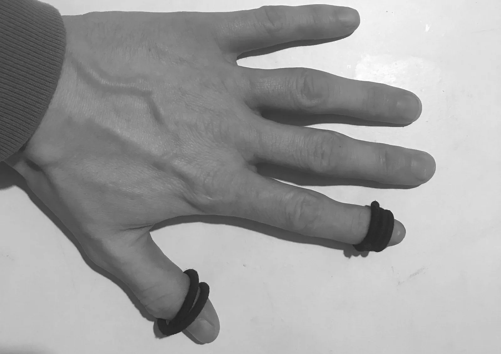
6) Medical tape — Verdict: Move forward to next trial.
Used with good success — it covered the damaged skin, and when applied correctly, applied light, consistent pressure that emulated the stimulation from damaged skin, providing a sensory feedback loop. It performed best of all the items for day-to-day activities once applied. Application took a very long time, especially early on when I was taping every digit — though the fingers themselves were straightforward to wrap. The thumbs had more complex geometry, making them harder to wrap in a way that stayed on all day without impeding dexterity or grip; I developed a technique using scissors to trim the tape so it would conform better to the thumb and reduce the risk of the edges snagging. Touchscreen use and grip were both partially impaired, but not to a degree that made me consider removing the tape during normal use. Moisture was the recurring weak point: the white tape got dirty and held moisture over the course of a day (the black tape masked dirt better), the skin underneath got soggy after a full day of wear — only partially breathable — and hand-washing made things worse, since the tape had no way of staying dry, the adhesive could become compromised while it dried out, and the tape could migrate as a result. I mostly ended up avoiding hand-washing where possible during this part of the trial, and would remove the tape before bed and reapply in the morning. I also couldn't get the same conformity from off-the-shelf plasters, since finger geometry is too challenging and dynamic for them. Technically this solution fails on hygiene and durability, but it performed so well across the other criteria that it was taken forward to the next trial regardless.

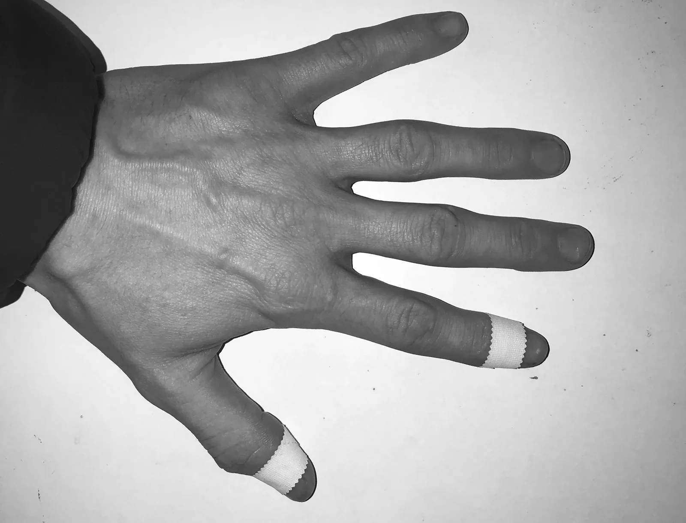
7) Silicone O-rings — Verdict: Not a solution.
The O-ring durometer was unforgiving — no stretch, which was needed to get past the knuckles of the thumbs. Rigid and uncomfortable.
Conclusions#
Location & Application Load: Testing focused on the specific regions of finger damage, primarily the distal fingertips — a challenging area given how exposed it is in day-to-day life, its role in gripping and phone use, and the frequency of hands moving in and out of pockets. Tracking items placed there proved difficult in practice: with up to 10 items applied simultaneously, individual pieces would fall off during use or go unnoticed as missing over the course of a day. Hair ties and rubber bands performed well individually but were not viable for long-term use on the fingertips, where this constant risk of displacement undermined their reliability. This limitation compounded at scale: applied across all fingers, both solutions became visually conspicuous and prone to frequent loss, making them impractical to maintain throughout the day. Medical tape maintained position more reliably, including when applied across all fingers, but at a significant cost in application time. No single solution satisfied both criteria simultaneously.
Stimulation (Sensory Feedback): Positioning items on the distal ends of the fingers and thumbs substantially reduced or eliminated picking in those areas. As the skin began to heal, picking behaviour redirected toward the applied items rather than the skin itself. This indicates that physically covering damaged skin introduces a new source of sensory stimulation — a consistent, low-level pressure — that is sufficient to divert both conscious and subconscious picking behaviour away from the cuticle and toward the item.
Sizing: Finger and thumb dimensions vary considerably between digits, and this variation, compounded by knuckle geometry, proved to be a significant factor in item performance. Solutions that fit well on one digit frequently failed to transfer effectively to others.
Skin Care: No skin care routine was in place at this stage of testing, which should be noted as a contextual factor for this trial's results.
Learnings#
This trial identified a critical distinction that had not been factored into the original test design: skin-picking cessation involves two sequential objectives rather than one, and progress on the first is a precondition for the second.
During the healing phase, skin will scab, and the sensory feedback generated by that tight, scabbing skin creates a strong pull toward picking at that location. Only once the skin has healed and the sensation lessens does the objective shift — from supporting recovery to preventing picking from recurring.
This distinction supports applying different criteria at each stage of the skin-picking lifecycle:
Short-term — An effective barrier that covers the damaged area of skin to allow for recovery. The solution can be a burden to apply, since it will only be in place for 2–3 weeks: medical tape.
Long-term — A solution that keeps a stimulant easily accessible, intended to remain on the hands at all times.
To put it simply, medical tape failed on hygiene and burden of application, but if you can tolerate that for roughly three weeks, it achieves strong results in healing the skin of the cuticles. After that period, the recommended transition is from medical tape to a banding solution (not yet fully solved for) to act as a long-term sensory redirect — away from the fingertips, toward an object providing stimulation elsewhere on the fingers.
Medical tape did not need to be taken forward into Trial 3 as it had served its purpose and allowed the skin on my fingers to successfully heal.
Trial 3#
Overview#
Trial 3 was a longer-term experiment with a narrower scope. The focus was on trialling banding solutions on the index fingers and thumbs. We have moved past ‘short-term’ solutions (medical tape) and moved onto long-term ‘maintenance’ solutions. The same list of criteria applies.
Variables Assessed#
Index finger:
Variable is location of the banding solution on the index fingers. Item to remain constant.
Thumb:
Variables are items trialled & configurations. Item location to remain constant.
Items#
Index Finger Trial:
Rubber Bands: 15mm diameter x 9mm width - (AliExpress)
Thumb Trial:
Standard Round Hair Tie (fabric outer w/ elastic core) – (store bought)
Round Rubber Hair Tie (Scunci brand) – (Amazon)
Standard Flat Rubber Band - (AliExpress)
Modified Flat Rubber Band (Infinity geometry) - (AliExpress)
Methods#
This trial lasted 3 months.
The tests used:
The Laptop/ Phone test
Driving Test
Pocket Test
Criteria for the trial:
Must prevent skin picking
Must have constant/continuous presence
Must be comfortable for extended wear
Must provide a feedback/soothing mechanism
Must not impair daily function
Must not be physically obtrusive
Must be discreet / socially acceptable
Must be simple and easy to implement
Must be hygienic
Must be durable / non-degrading with normal activity
Configurations#
Detailed below are the banding configurations used across the index fingers and thumbs.
Index Finger: Small diameter rubber bands were implemented on the fingers. No wrapping techniques used on the Index Fingers due to the number of variables being difficult to control for (correctly sizing, number of wraps, not restricting blood flow).
Thumb: Each banding solution was ‘double wrapped’ around the proximal joint of the thumbs.
Index Finger Configuration#
During this trial, banding solutions were trialled on the distal phalange (fingertip) and on the middle joint (middle phalange).

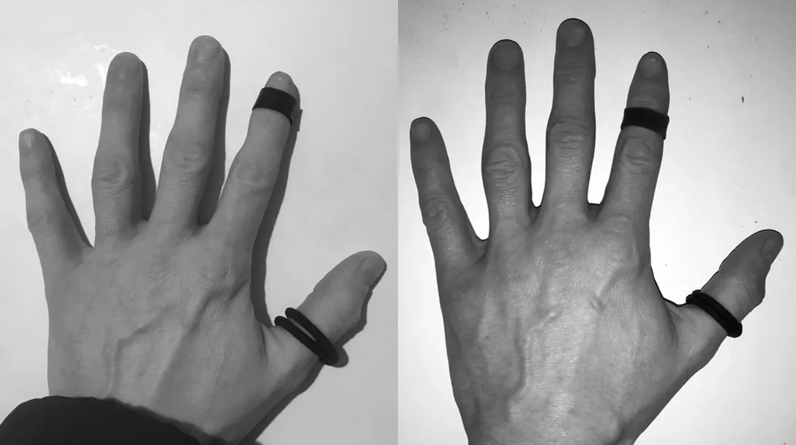
Thumb Configuration#
During this trial, banding solutions and techniques were trialled on the proximal phalange of the thumb.

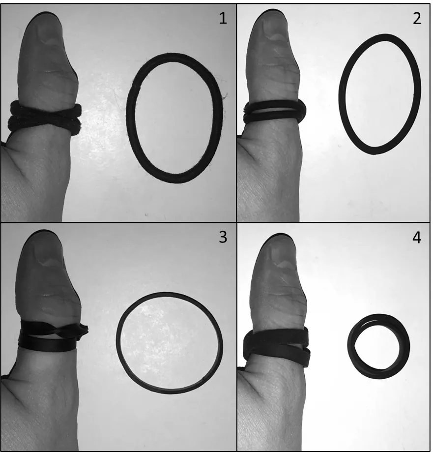
Standard Round Hair Tie – Highest side profile
Round Rubber Hair Tie (Scunci brand) – Moderate side profile
Standard Flat Rubber Band – High side profile
Modified Flat Rubber Band (Infinity geometry) – Lowest side profile
The side profile for each of the items trialled on the thumb are shown to visually compare how each solution sits on the thumb.
Thumb Banding Solutions Comparison#
Standard Round Hair Ties:
Advantages:
Readily available and widely used.
Highly elastic, easily stretching to accommodate different diameters.
Performs well in its original size, conforming effectively to various placements.
Disadvantages:
Absorbs moisture and retains it for extended periods, leading to hygiene concerns.
Fabric can degrade over time, losing elasticity and shape.
Raised profile on the thumb – snag risk?
Round Rubber Hair Ties (Scunci):
Advantages:
Waterproof - more hygienic than fabric alternatives.
Durable – does not absorb oils from the skin and degrade with time.
Do not stretch over time (did not absorb oils from the skin)
Disadvantages:
Less adaptable to different diameters due to material lack of stretch.
Raised profile on the thumb – snag risk?
Standard Flat Rubber Bands:
Advantages:
Easily conform to different diameters.
Can be cut, resized, & glued as needed.
Available in packs with varying circumferences, allowing for better sizing options.
Disadvantages:
Prone to absorbing oils from the skin, which causes them to stretch and loosen over time. May require frequent resizing or replacement over the course of a few months.
Modified Flat Rubber Bands:
Advantages:
Retain all the benefits of standard rubber bands.
Lowest profile of all tested options – reduced snag risk.
Disadvantages:
Susceptible to oil absorption and stretching over time, requiring occasional resizing.
Results#
Thumb configurations results:
| Criteria | Standard Hair Tie | Rubber Hair Tie | Flat Rubber Band | Infinity Rubber Band |
|---|---|---|---|---|
| 1Prevent | Partial | Partial | Partial | Partial |
| 2Presence | Pass | Pass | Pass | Pass |
| 3Comfort | Pass | Pass | Pass | Pass |
| 4Feedback | Pass | Pass | Pass | Pass |
| 5Function | Pass | Pass | Pass | Pass |
| 6Obtrusive | Fail | Fail | Partial | Pass |
| 7Discreet | Partial | Partial | Partial | Partial |
| 8Simple | Pass | Pass | Pass | Pass |
| 9Hygienic | Partial | Partial | Pass | Pass |
| 10Durable | Partial | Pass | Partial | Partial |
| Verdict | Out | Out | Out | Proceed |
Summary & Considerations#
Fabric Hair Ties had good adaptability but suffered from moisture/ hygiene concerns.
Rubber Hair Ties scored well on hygiene but lacked adaptability and have a raised profile.
Standard Flat Rubber Bands were stretchy but had a raised profile. They loosened over time.
Modified Rubber Bands offered the lowest profile but was prone to loosening over time due to absorbing oils from the skin. They also require bespoke assembly to make them fit correctly.
Note: I have scored the items as ‘Partial’ on Criteria 1: Prevent. I have done this intentionally to highlight that none of these solutions cover or block the cuticle area of the digits – technically I could decide to pick at these areas. I am relying on the sensory feedback from the solution to redirect my conscious and subconscious hands to pick at the solution implemented instead of picking at the skin.
Observations#
Trial 3 ran both the Index Finger and Thumb tests independently in parallel. It is worth noting that the tests were dependent on each other succeeding (which was a risk). I had enough confidence in the results from Trial 2 to move forward with this approach. We are also talking about the real world here and I accepted the risk to reduce the expected timeframe of this trial.
Index Finger: The purpose of this test was to assess the long-term feasibility of maintaining a banding solution on the index finger. The main concerns I had going into the trial was around the amount of effort it would take throughout a day to keep the bands in position on the fingers, and how they held up to all day use. I had also never worn a band on my fingers long term, so that was also a learning curve as to the positioning/ comfort of long-term wear.
An observation on the rubber band geometry: the bands had a rectangular cross section, which means they had ‘sharp’ edges, not rounded over edges like you might find on a ring. I liked the sharp edges and it was noticeable that I would catch and flick the edges with fingers seeking stimulation. The band is made out of rubber so I wasn’t doing any harm to myself, but the sensation was very good as a non-destructive stimulant.
It became apparent early on in the trial that the position of the index finger banding solution was not fixed - moving between the distal phalange (fingertip segment) and middle phalange as needed. The default position for the band on the Index Finger became the middle phalange. This location proved better protected for everyday use, with a significantly lower risk of the band slipping off.
Trigger for repositioning: if I noticed my thumbs or other fingers searching for stimulation near the index finger's cuticle, the band was rolled from the middle phalange, over the knuckle, and up onto the fingertip to give the other digits something to engage with there. After a while, it was rolled back down to the middle phalange.
Thumb: From Trial 2, we identified a successful location on the thumb for the banding solution. What we wanted to achieve from this test was a banding solution on the thumb that could be implemented longer term.
Of the configurations tested, all performed well functionally — but overall profile height was the single biggest differentiator between them (Obtrusiveness). A raised or prominent profile failed the Pocket Test. The band would roll up the thumb when entering a pocket or just snag on the edges of the pocket. The higher the profile, the greater the snag risk.
Worth noting that the Infinity Rubber Band is technically a custom solution, not ‘off the shelf’. A standard flat rubber band has to be cut, twisted and glued back together to generate the shape required for the Infinity Band (I promise I didn’t pick this item just because of its name).
Conclusion#
We have identified a long-term physical working solution:
Index Finger: Rubber Band placed on middle joint
Thumb: Infinity Rubber Band double wrapped, placed on the proximal phalange

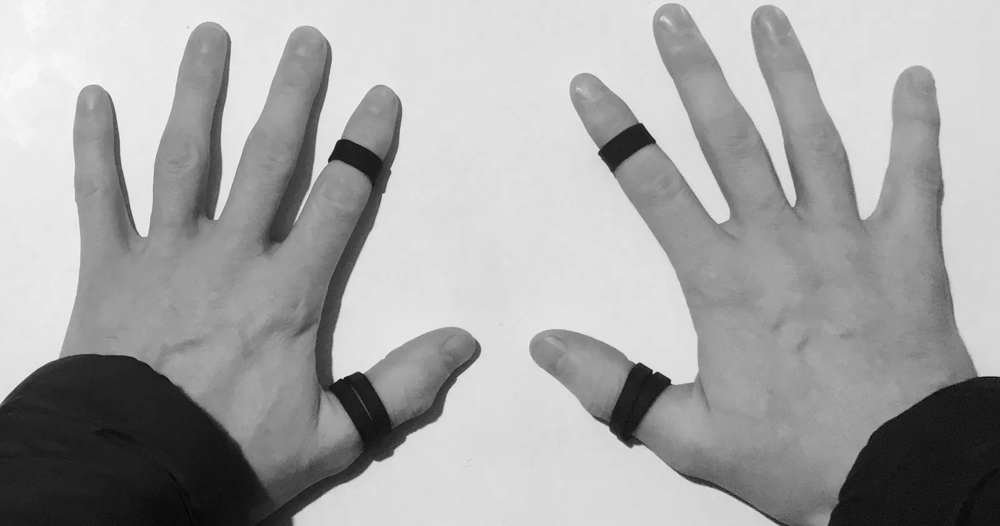
Drawbacks: Technically, not an off the shelf solution – manual modification required to make the item – I have the ability to make this item, but not everyone else will.
For those not comfortable cutting/ gluing things, I can suggest the following as a working solution:
Index Finger: Rubber Band
Thumb: Standard fabric Hair Tie double wrapped, placed on the proximal phalange
Hair ties are readily available, and when they get wet during the day, or stretch over time, just replace them. They are easy to put on and take off. The snag risk is still an issue, but it is better to have a solution in place rather than nothing at all. I have found myself using a hair tie on my thumbs from time to time when I have misplaced an Infinity Band, or when the band broke and I took a while getting around to fixing/ resize it.
Criteria to solve for: Rubber Bands#
Prerequisite: the bands must be correctly sized for both finger and thumb joints.
Must prevent skin picking.
Medical Tape short term physical barrier. Rubber bands long term redirection technique (coupled with skin care routine).
Must have constant/continuous presence.
Fits on index fingers and thumbs.
Must be comfortable for extended wear.
Indefinitely.
Must provide a feedback/soothing mechanism.
Applies a slight amount of pressure and can be manipulated to provide flicking/ picking sensation to the wearer.
Must not impair daily function.
Minimal/ no impairment in day-to-day activities.
Must not be physically obtrusive.
Bands are low profile and pass the snag test.
Must be discreet / socially acceptable.
The bands look like finger rings at a glance. At worst, wearing of these bands comes across as a fashion statement. Some people ask about them and are generally intrigued when I explain what they are for. They then go on to make some form of remark that the skin on my fingers looks fine, so why bother wearing the rings…the irony.
Must be simple and easy to implement.
The bands can be applied/ taken off in seconds.
Must be hygienic.
Can be washed and don’t hold moisture – the bands do absorb oils over time so they should be replaced every couple of months. I have found that there is a general attrition rate where I will just lose one every now and again and must replace it.
Must be durable / non-degrading with normal activity
The rubber is very durable (oil absorption notwithstanding). Can get months out of a band before needing replacement.
Trial 4#
Overview#
Correctly-sized silicone rings had been ordered earlier but were lost in the post, arriving months into the testing. In the meantime, long-term use of the Trial 3 rubber band solution surfaced a few practical drawbacks I wanted to try to solve for:
Rubber degrades over time — it absorbs oils from the skin, which shortens its usable life. The thumb "Infinity Band" required ongoing maintenance — cutting, resizing, and gluing new bands. This wasn't frequent, but it was a small recurring chore that acted as a minor barrier to consistently keeping the solution in place.
After roughly 6 months on the Trial 3 solution, Trial 4 tested whether silicone or metal rings could serve as a more "normal," lower-maintenance, everyday substitute while keeping the same sensory feedback that makes the rubber bands work so well.
Rationale#
Rings are more discreet than rubber bands — they read as ordinary jewellery rather than a visible fidget aid.
Silicone is more durable than rubber and doesn't absorb skin oils, so it shouldn't degrade the way rubber bands did.
Off-the-shelf — no need to custom-cut and glue an "Infinity Band" for the thumb.
Sizing is straightforward — unlike custom rubber bands, ring sizing is a standardised, well-understood system, provided the correct size is chosen.
Comparable price point to the rubber band solution.
Items Trialled#
Silicone finger bands (silicone wedding-ring style) – Referred to as Silicone rings
Metal rings
Placement#
Rings were sized for standard ring positions: on the thumb and on the index finger, at the joint closest to the hand. This differed from the rubber band configuration in Trial 3, in which the rubber band was positioned on the middle phalange of the index fingers.

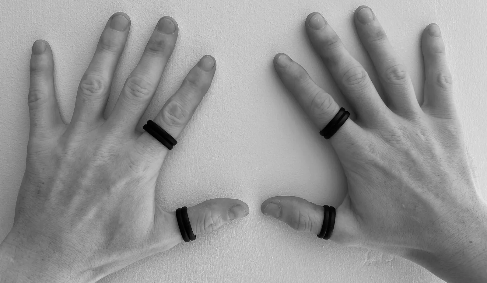
Results#
Silicone Rings — Success – direct replacement.
Silicone rings worked as a direct, drop-in replacement for the Trial 3 rubber band solution. They delivered the same sensory feedback with none of the rubber durability or maintenance issues. The new positioning of the rings on the index fingers also didn’t present any problems and still worked in redirecting sensory stimulation away from the cuticle areas.
I developed a habit of flicking the edges of the rings in a similar way to how I did with the rubber bands. This was the non-destructive redirection technique I didn’t know I needed. It acts as a complete mask for picking at the skin around the cuticles.
Metal Rings — Inconclusive, therefore not viable.
Metal rings did not work for me as I could not size them correctly for my fingers. The knuckles of my fingers and thumbs are noticeably larger than where the rings ultimately sit. Any metal ring sized to pass over the knuckle was, once in position, too loose on the finger/thumb. A loose fit did not produce a noticeable pressure that the sensory feedback loop depends on. Without that pressure, the ring stopped functioning as an effective substitute for picking. They also failed on the snag test, and the poor fit was ultimately a frustration to the point that I removed them.
Conclusion#
Silicone rings are an arguably better alternative to rubber bands, offering the same effectiveness with better discretion and durability. Metal rings did not work for me, and even if I was able to wear them longer term, I do not think they would have performed as well as the silicone rings.
Closing remarks: I hope that at some point in the future I can reduce the number of Silicone rings on my hands. Currently I have four Silicone rings (both index and both thumbs). I think in time, I could wean myself down to just two rings on either the fingers or thumbs, which I could attempt in a ‘Trial 5’. At the moment, with four rings on my fingers, they come across as a fashion statement, which I have learnt to accept. We have come a long way from almost leaving the house with leather gloves on.
As of writing this document, I have been using Silicone rings for almost two years (2025-2026).
Amazingly, this is only half the story – the other half of this endeavour involved educating myself about the skin of the fingers and developing a working solution to maintain the health of the cuticles.
TLDR – I’ve reinvented the wheel. Silicone rings act as a form of physical CBT on destructive impulses and redirect them towards non-destructive stimulation.
Mental: Skin care maintenance routine#
Overview#
After years of continual picking, the skin around the cuticles has become scar tissue. It behaves differently from healthy skin. The skin is thin, fragile, and prone to drying out and splitting under normal daily use, and that’s before I start picking at it.
My cuticles appear to have developed an issue with how they form and grow. In my case, the cuticles grow out fused to the nail plate – they don’t separate as they should. As the nail grows, it drags the cuticle and surrounding tissue out with it, putting the skin under increasing tension until it tears. That damaged skin then becomes "fair game" for picking — a raised edge, a ridge, or even just a texture difference is a trigger for picking, consciously or subconsciously.
I didn’t realise my cuticles had this issue where the skin did not separate from the nail. It can also be speculated that this failure to separate is the result of the trauma caused from a lifetime spent picking at the skin – the skin, proximal nail fold and cuticles of my toes do not suffer from this issue, and I don’t pick at them (it’s not a perfect analogy).
This is where intervention is required. I have identified that my skin is struggling to carry out normal functions. Fully healed and healthy skin has a much better chance of not being picked. Therefore, I need to implement a routine to maintain my skin in a healthy state. As a male, the idea of a skin care routine is a foreign concept to me, so again, apologies, I did mention I was reinventing the wheel.
Skin Care#
Everyone will develop their own routine that works for them. I want to focus on the top-level actions that should help remove as many physical triggers as possible, so the fingers have no stimulant to gravitate towards.
Hydration – moisturiser and oils
Maintenance – Nail clippers and cuticle clippers
Hydration: however you want to solve for this, there are many products that can help improve the health of the skin around your fingers. Moisturisers help to hydrate the skin. Oils help to lock in that moisturiser. I moisturise the skin of my fingers as part of daily morning and evening routines. I keep a travel bottle of moisturiser in my pocket so I can keep on top of skin hydration throughout the day. I now apply moisturiser after meals or after I wash my hands – it’s starting to come across like an OCD but I don’t care if it keeps my skin healthy.
Maintenance: No matter what you do, you are going to damage your skin. When my skin does get damaged, I need to immediately remove the damaged skin with a cuticle clipper. This may seem drastic, but it’s either that, or back to the medical tape. By removing the damaged skin, I lessen the urge to pick at the area of skin. Cutting the damaged skin off is prolonging the recovery time for the skin, but it is the lesser evil in this instance. Fingernails should also be kept trimmed and blunt. I carry a cuticle clipper in my backpack and in my car – close to hand, but not on my person.
Note: I do not use cuticle clippers to cut my cuticles, I have just found them to be very good at cutting damaged skin flush with the surrounding skin. I try to be as conservative with the cuticle clippers as possible – it is very easy to go overboard. I just know that if I do not clip the hanging skin off, I will pick at it and make things much worse.
Closing Statements#
I never thought I would be here, the skin on my fingers healing, typing this document. Yet even as I type, my fingers consistently, with every pause in my typing, trace a pattern across my fingertips, seeking stimulation. With none to be found they gravitate to the rings I wear, and gently flick at them.
I am coming up on 2 full years of a working picking redirection technique with the banding solution. I’ve fallen off the wagon a few times (went back to medical tape once or twice on a finger), but overall, the skin on my fingers is still very thin and fragile. Compared to how the skin was two years ago, the difference is night and day in how much better my skin is now.
The Healing Process#
Skin healing takes weeks.
Skin recovery takes years.
Skin maintenance takes a lifetime.
And it has to be said that I have not ‘cured’ my skin picking. I call this a working solution because you have to work for it. I have developed a method for redirecting a destructive stimulation of picking and refocusing it towards a non-destructive stimulation of flicking the silicone bands.
Testimonial#
I do get asked occasionally what the rings are for. Some people think it is wearable tech, while others assume it’s a fashion statement (my flair). I explain I have a compulsion to pick at the skin on my fingers and the rings redirect the picking away from the skin and towards them. Some people find this interesting and ask more questions. Some people accept the answer and the conversation moves on.
I no longer feel self-conscious about wearing the silicone rings, because I realised, I am proud of my skin. I shove my hands in people’s faces when they ask about the rings and get excited showing them how good the skin on my fingers is – ‘LOOK! My fingers aren’t bleeding!’. Strangely, my excitement is not reciprocated, and they look like they regretted asking the question.
This was a lot of effort to justify re-entering my Emo phase putting rings on my fingers and calling them a fashion statement. Worth it.
Appendix#
Medical Tape Application Technique#
I am unsure how readily available this brand of medical tape is. I got this roll of tape from a hospital when I broke my hand a few years ago. I have searched for over-the-counter alternatives in pharmacies, but this is the best tape I have used. It holds up for a full day, and when it does get taken off, the glue residue left behind can be very easily removed.
Covidien Kendall standard porous tape 1/2" x 10yd (1.3cm x 9.1m)
Precision Embroidery Scissors with curved tip, 3.5”

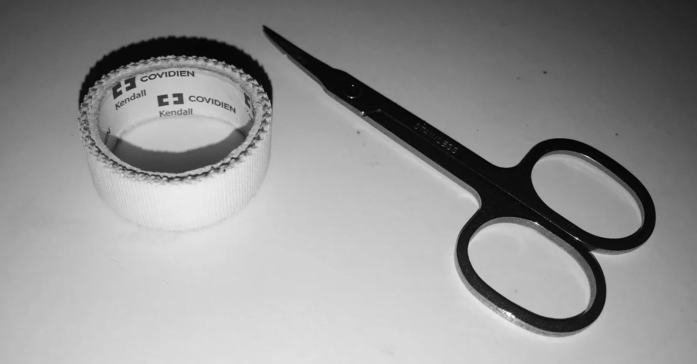
Instructions on how to wrap tape#
Tape was wrapped from back of hand and overlapped in the front

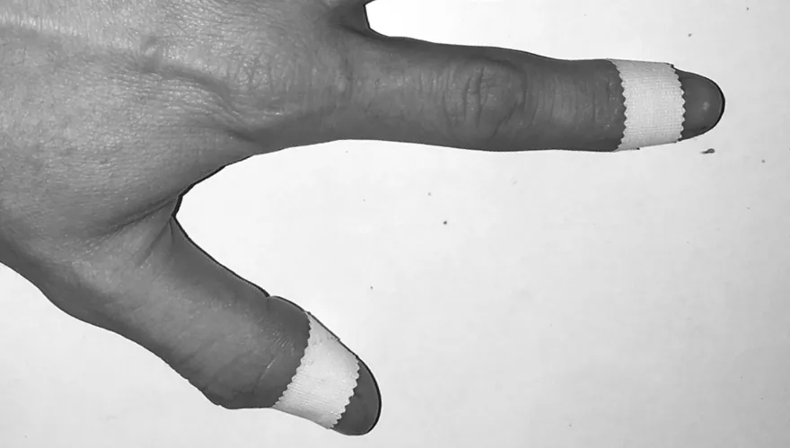

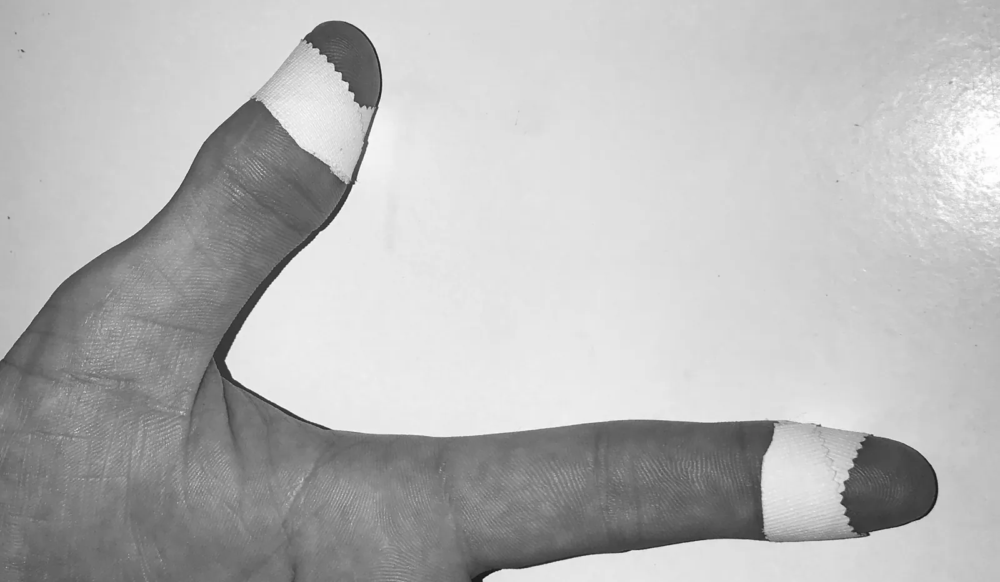
On the front of the hand, the tails of the overlapped tape were cut away with the curved scissors (carefully).